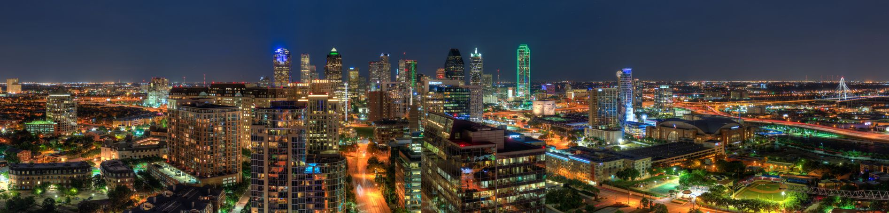

Dallas
Location
Dallas resides in the Prairies and Lakes region of North Texas and is the third most populous city in the state of Texas, after Houston and San Antonio. It spans over 385 square miles and occupies portions of five different counties: Dallas (of which it is the County Seat), Collin, Denton, Kaufman, and Rockwall. Dallas and the cities of the surrounding metroplex area are classified as urban.
Sports and Recreation
Dallas and its suburbs are home to several professional sports teams:
| Team Name | Sport | League | Home Stadium | City |
|---|---|---|---|---|
| Dallas Cowboys | American Football | National Football League (NFL) | AT&T Stadium | Arlington |
| Frisco Fighters | American Football | Indoor Football League | Comerica Center | Frisco |
| Texas Rangers | Baseball | Major League Baseball (MLB) | Globe Life Field | Arlington |
| Frisco Rough Riders | Baseball | Minor League Baseball | Riders Field | Frisco |
| Dallas Mavericks | Basketball | National Basketball Association (NBA) | American Airlines Center | Dallas |
| Texas Legends | Basketball | NBA G League | Comerica Center | Frisco |
| Dallas Wings | Basketball | Women's National Basketball Association (WNBA) | College Park Center | Arlington |
| Dallas Stars | Ice Hockey | National Hockey League | American Airlines Center | Dallas |
| Allen Americans | Ice Hockey | ECHL | Credit Union of Texas Event Center | Allen |
| Dallas Jackals | Rugby | Major League Rugby | Choctaw Stadium | Arlington |
| FC Dallas | Soccer | Major League Soccer | Toyota Stadium | Frisco |
Dallas has also proudly hosted the State Fair of Texas almost every year since 1886, interrupted only by World Wars I and II and by the COVID-19 pandemic. Held at the Cotton Bowl inside of Fair Park since 1929, the "Red River Rivalry" football game between the University of Texas Longhorns and the Oklahoma Sooners is one of the most famous events of the annual fair. The fair is also known for its auto show, its wide array of deep-fried foods, and, of course, Big Tex.